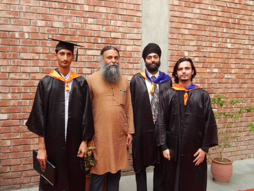

QCQI @ IISER Mohali
Table of Contents
The Quantum Computation and Quantum Information Group at the Indian Institute of Science Education and Research (IISER) Mohali, led by Prof. Arvind, concerns itself with exploring methods to harness physics at the atomic scale to perform computational tasks. Usual (classical) computers use transistors which operate by using binary states. The state of any given signal can either 1 or 0 (or any other labels you like). Quantum computers allow for the state to be a combination of these, thereby facilitating the ability to harness computation power which was otherwise inaccessible. This approach has also engendered edification of foundational aspects of quantum physics, that which describes atomic phenomena.
News
Convocation 2016
Two PhD students and three MS students received their degrees in the Convocation of 2016.
| Person | Degree | Title of Thesis |
|---|---|---|
| Jebarathnam C | PhD | Characterizing quantum correlations in the nonsignaling framework |
| Debmalya Das | PhD | Quantum state estimation using weak measurements and entanglement manipulation with local filters |
| Atul Singh Arora | MS | Contextuality in a Deterministic Quantum Theory |
| Kishor Bharti | MS | Quantum Correlations and Its Applications |
| Rajendra Bhati | MS | On the Spontaneous Localization Process of Many-Particle System |

Figure 1: (from the left) Rajendra Bhati, Arvind, Atul S. Arora, Kishor Bharti
Members
Current
| Person | Research | |
|---|---|---|
| Arvind | Prof | His research interests span the areas of quantum information processing, quantum optics, foundations of quantum mechanics and research in physics education. Quantum Computing: Characterising quantum entanglement and tracing its exact role in quantum algorithms remains a challenging open problem. I have worked on issues related to quantum entanglement in the context of the Deutsch-Jozsa algorithm and Parity Determining algorithm, quantum dissipation and its control, optical schemes for quantum computers and NMR implementations of quantum information processors. My current research interests in quantum information include characterisation of bound state entanglement, role of entanglement in quantum computation, quantum crytography and physical implementations of quantum computers. Foundations of QM: I have also been working on connection of Bell's inequalities with non-classicality of states of the radiation field, formulation of Bell's inequalities for multi-photon sources, geometric phases in quantum mechanics, different approaches to the quantum measurement problem and in particular understanding weak measurements. Quantum Optics: My research in quantum optics includes signatures of non-classical behaviour for the radiation field such as squeezing, subpoissonian photon statistics and antibunching, and application of group theoretic methods in quantum optics. Physics Education: I am working on building new experiments for physics teaching which are designed around a certain conceptual theme. Experiments developed so far include random sampling of an AC source with a DC meter, a demonstration of Coriolis force, normal modes and symmetry breaking in a 2D pendulum using a single oscillator, and a quantitative study of ion diffusion. |
| Jaskaran Singh | PhD |
Ex-Members
| Person | Research Area | Research Description | |
|---|---|---|---|
| Atul Singh Arora | MS | Foundations of QM, Contextuality, Bohmian Mechanics | The Copenhagen Interpretation of Quantum Mechanics (QM) asserts that the wavefunction is the most complete description, which entails that there is an inherent fuzziness in our description of nature. There exists a completion of QM, known as Bohmian Mechanics (BM), which replaces this fuzziness with precision, and re-introduces notions of physical trajectories. Various interesting questions arise, solely by the existence of such a description; doesn't it contradict the uncertainty principle, for instance. Most of these questions were found to have been addressed satisfactorily in the literature. There was, however, one question, whose answer has become the subject of his investigation; that of the paradoxical co-existence of contextuality and BM. In a theory that can predict the value of operators, the value an operator takes, must depend on the state of the system (including hidden variables). Contextuality arguments show that the value an operator takes, must also depend on the complete set of compatible operators, to be consistent with QM. BM being deterministic, is at complete odds with this notion. After various attempts he was able to show, that the notion of contextuality is in fact not necessary. This was achieved by identifying another `classical property' and constructing a non-contextual toy-model, serving as a counter-example to the impossibility proof. The toy model has been generalized to a discrete but arbitrarily sized Hilbert space, consistent with all predictions of QM. Implications of violation of this `classical property' were explored, in particular, to the notion of non-locality. |
| Kishor Bharti | MS | Entanglement, Quantum Information | In his thesis, he tried to understand and characterize quantum correlations. Attmpts were made to focus on the key ingredients of quantum mechanics which differentiate quantum correlations from the classical ones. The thesis focused on entanglement, its manifestation as Bell nonlocality, quantum contextuality and discord. Furthermore, analysis of implications of quantum correltions for device independent quantum key distribution was tried, with the hope to understand foundations of quantum mechanics at a deeper level. |
| Rajendra Bhati | MS | Foundations of QM | Measurement Problem, Collapse Models |
About
The website
This website was created using emacs's org-mode, CSS for org, and gh-pages on gitHub.